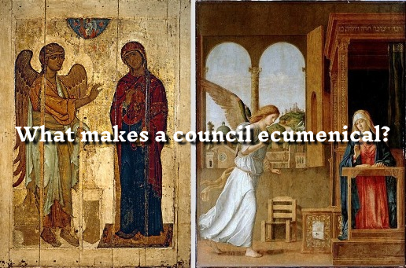

What Makes a Council Ecumenical?
Introduction
What defines an ecumenical council? For both Roman Catholics and Eastern Orthodox Christians, ecumenical councils hold a position of supreme doctrinal authority, guided by the Holy Spirit. However, the criteria by which a council is recognized as "ecumenical" (and thus binding on the entire Church) differs subtly but significantly between the two traditions of today. This article explores the history, theology, and ecclesiology behind that question, aiming to establish what makes a council truly ecumenical.
Historical Criteria for Ecumenical Councils
From the first seven ecumenical councils (325–787), both Catholics and Orthodox generally agree on the following historical features:
- Universal Representation: Bishops from across the Christian world were invited and largely present.
- Doctrinal Definition: Each council defined doctrine in response to heresy.
- Imperial Convocation: The Roman emperor usually called the council.
- Reception by the Church: The decisions were received and accepted by the Church at large.
Catholic View: Papal Ratification as Essential
The Catholic Church teaches that an ecumenical council is only valid and binding if it is confirmed by the Pope. This stems from the belief that Christ gave Peter and his successors a unique role in safeguarding Church unity and doctrine (cf. Matt 16:18–19).
- Catechism of the Catholic Church (CCC 884): "The college or body of bishops has no authority unless united with the Roman Pontiff."
- Vatican I (1870), Pastor Aeternus: Defined papal supremacy and the necessity of papal confirmation for council validity.
Implication: Catholicism sees the pope not merely as a first among equals but as a divinely appointed head who must ratify conciliar decisions for them to be ecumenical.
Orthodox View: Reception by the Whole Church
The Orthodox Church does not regard papal ratification as necessary. Instead, a council becomes ecumenical when it is received by the entire Church—clergy and laity alike—over time.
- St. Vincent of Lérins (5th c.): "We hold that faith which has been believed everywhere, always, and by all."
- Metropolitan Kallistos Ware: "An ecumenical council is not ecumenical by virtue of the number present or because a pope or emperor says so, but by virtue of its truth and its acceptance by the Church."
Implication: Orthodoxy emphasizes conciliarity and the consensus fidelium (agreement of the faithful) rather than hierarchical ratification.
Do Both Sides Agree?
Shared Beliefs:
- Both traditions agree that ecumenical councils must define doctrine and address heresies.
- Both affirm that councils must be received by the Church.
Key Difference:
- Catholics believe papal ratification is necessary.
- Orthodox believe reception by the Church is sufficient.
Do All Within the Traditions Accept This?
Within Catholicism, papal confirmation is universally affirmed due to its codification in canon law and Vatican I.
Within Orthodoxy, while the principle of reception is generally accepted, debates remain about how exactly reception is determined—by bishops, local synods, or the faithful at large.
Does the Papacy Define the Standard?
Yes—from the Catholic point of view. The papacy is seen as the instrument by which Christ safeguards the Church’s doctrinal unity. Therefore, it has the authority to both convene and confirm ecumenical councils.
No—from the Orthodox point of view. The Church as a whole, guided by the Holy Spirit, discerns the truth over time, regardless of papal involvement.
Conclusion
What makes a council ecumenical? Catholics and Orthodox both affirm the role of the Holy Spirit and the need for doctrinal clarity, but they part ways on who validates that clarity. For Catholics, it is the pope. For Orthodox, it is the Church’s reception across time. Understanding this divergence is essential before evaluating later controversies—especially those surrounding the Great Schism and modern papal claims.